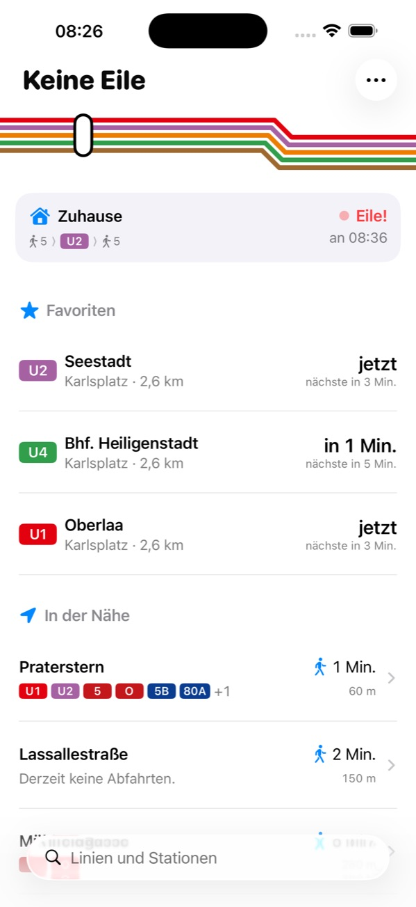
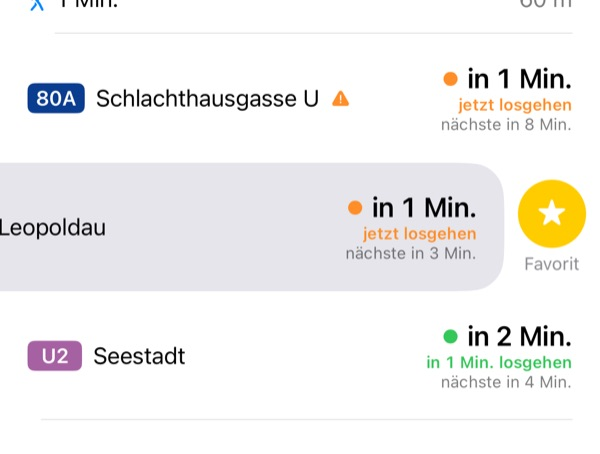
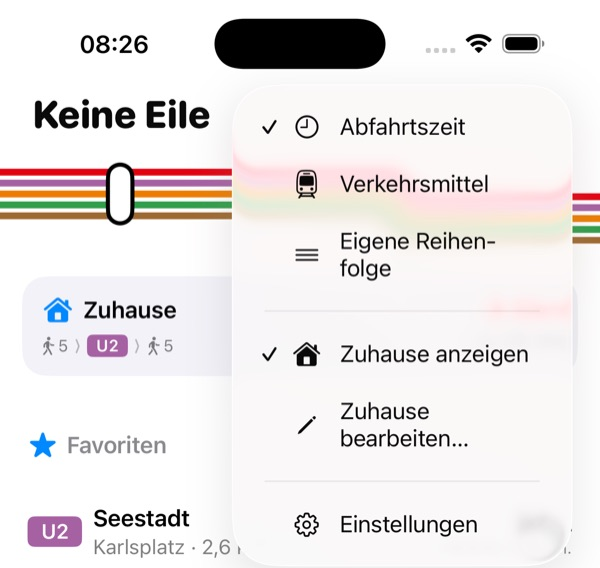
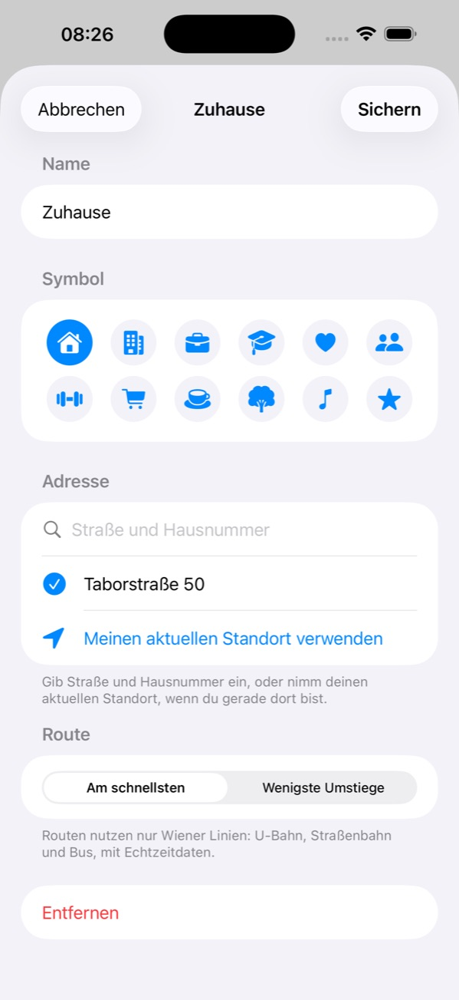
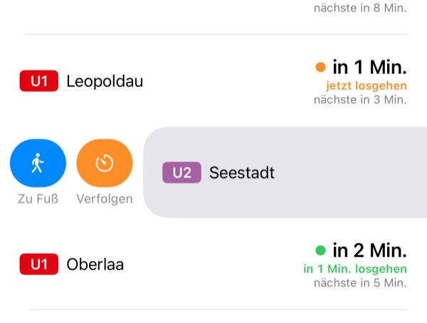
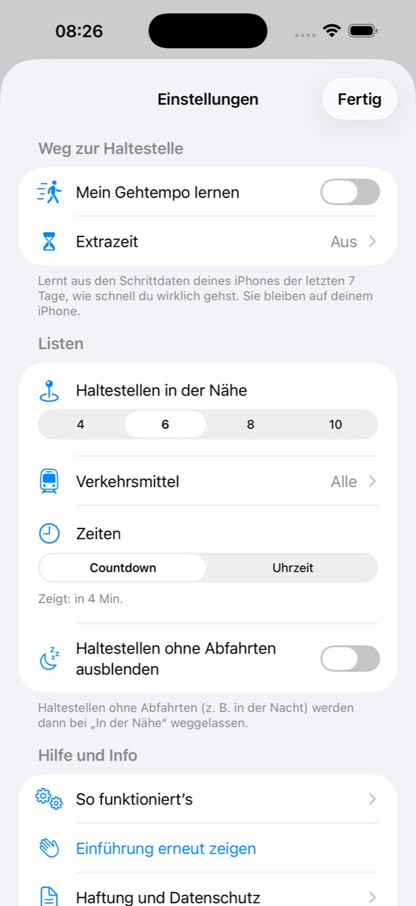
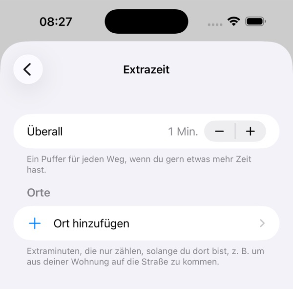
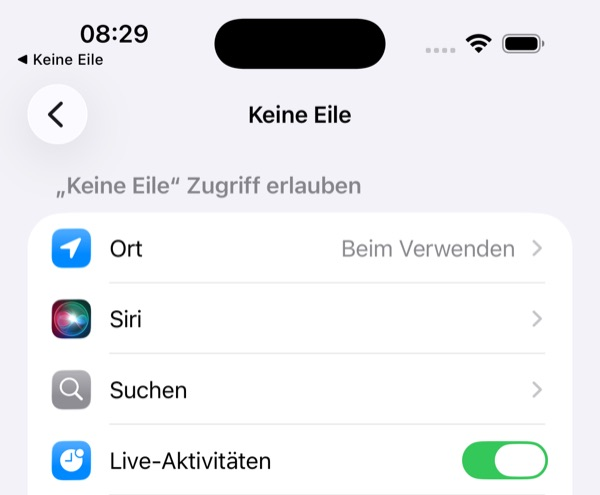
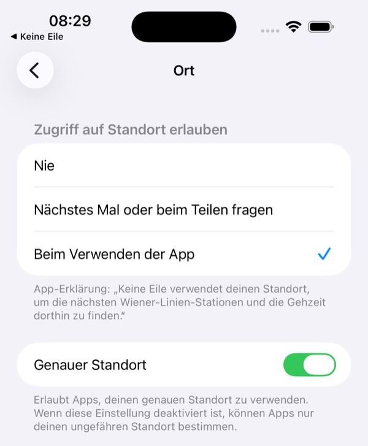

Unabhängige App · keine offizielle App der Wiener Linien
Anleitungen und Problemlösung
So holst du das Beste aus Keine Eile heraus, und das hilft, wenn etwas nicht funktioniert.
Anleitungen
Der Hauptbildschirm
Wenn du die App öffnest, siehst du von oben nach unten:
- Dein Ziel: den schnellsten Weg dorthin und wann du losmusst.
- Favoriten: die Linien, die du gespeichert hast.
- In der Nähe: die Stationen rund um dich, nach Gehzeit sortiert. Tipp auf eine Station, um alle Linien, Störungen und Liftausfälle zu sehen.
Jede Abfahrt hat einen Status:
- in 5 Min. losgehen: Du hast Zeit.
- jetzt losgehen: Mach dich auf den Weg.
- Eile!: Das geht sich nur aus, wenn du dich beeilst.
Suchst du eine Haltestelle, die nicht in der Nähe ist? Nutz das Suchfeld unten: Gib eine Linie („U1“, „13A“) oder eine Station („Stephansplatz“) ein.

Einen Favoriten speichern
- Öffne eine Station (über „In der Nähe“ oder die Suche).
- Wische nach links auf der Linie und Richtung, die du nimmst.
- Tipp auf den gelben Stern, Favorit.
Die Linie erscheint jetzt unter „Favoriten“ am Hauptbildschirm, in deinen Widgets und bei Siri. Ein Favorit ist immer eine Linie in eine Richtung an einer Haltestelle.
Zum Entfernen wischst du auf dem Favoriten wieder nach links und tippst auf Entfernen. Für eine eigene Reihenfolge tippst du auf … → Eigene Reihenfolge, hältst einen Favoriten gedrückt und ziehst ihn an die gewünschte Stelle.

Dein Ziel festlegen
Keine Eile kann dir den schnellsten Weg zu einem Ort zeigen, an den du oft fährst, zum Beispiel nach Hause oder in die Arbeit.
- Tipp am Hauptbildschirm auf … → Zuhause bearbeiten…. (Hast du noch kein Ziel festgelegt, kannst du auch auf die Karte ganz oben tippen.)
- Gib ihm einen Namen und wähl ein Symbol.
- Gib Straße und Hausnummer ein und wähl die Adresse aus, oder tipp auf Meinen aktuellen Standort verwenden, wenn du gerade dort bist.
- Wähl Am schnellsten oder Wenigste Umstiege und tipp auf Sichern.
Tipp auf die Karte, um jeden Schritt der Fahrt zu sehen. Zum Ausblenden hältst du die Karte gedrückt; über das Menü … holst du sie wieder zurück.


Eine Abfahrt am Sperrbildschirm verfolgen
- Öffne eine Station und wische nach rechts auf einer Linie.
- Tipp auf Verfolgen.
Die Abfahrt zählt jetzt am Sperrbildschirm und in der Dynamic Island herunter, samt der Zeit zum Losgehen. Zwei Minuten nach der Abfahrt endet sie von selbst. Startest du eine neue, ersetzt sie die alte.
Zu Fuß daneben öffnet den Fußweg zur Haltestelle in Apple Karten.

Gehzeiten anpassen
Tipp auf … → Einstellungen und schau unter Weg zur Haltestelle.
- Mein Gehtempo lernen: Die App schaut sich die Schrittdaten deines iPhones der letzten 7 Tage an und passt die Gehzeiten daran an, wie schnell du wirklich gehst. Deine Schrittdaten bleiben auf deinem iPhone.
- Extrazeit: Plan bei jedem Weg einen Puffer ein (Überall) oder nur an bestimmten Orten (Ort hinzufügen), zum Beispiel die Minuten, die du von deiner Wohnung auf die Straße brauchst.
Der Status jeder Abfahrt passt sich sofort an.


Ein Widget hinzufügen
Home-Bildschirm:
- Halte eine freie Stelle am Home-Bildschirm gedrückt, bis die Apps wackeln.
- Tipp links oben auf Bearbeiten und dann auf Widget hinzufügen.
- Such nach Keine Eile.
- Wähl Favoriten oder Heimweg, such dir eine Größe aus und tipp auf Widget hinzufügen.
Welche Favoriten das Widget zeigt, legst du fest, indem du es gedrückt hältst und auf Widget bearbeiten tippst.
Sperrbildschirm: Halte den Sperrbildschirm gedrückt, tipp auf Anpassen → Sperrbildschirm, dann auf den Widget-Bereich, und füge Keine Eile hinzu.
Siri fragen
Siri braucht den Namen der App im Satz. Probier:
- „Keine Eile, wann muss ich los?“
- „Wann soll ich losgehen mit Keine Eile?“
- „Keine Eile, wie komme ich nach Hause?“
Siri antwortet mit dem Favoriten, zu dem du als Erstes losmusst, oder mit dem schnellsten Weg zu deinem Ziel. Beides findest du auch in der Kurzbefehle-App, zum Beispiel für jeden Werktag um 8:00.
Problemlösung
Es werden keine Haltestellen angezeigt
Steht in der App Der Standortzugriff ist ausgeschaltet oder Der genaue Standort ist ausgeschaltet, kann sie die Haltestellen rund um dich nicht finden und den Weg nicht berechnen.
- Öffne die App Einstellungen auf deinem iPhone.
- Tipp auf Apps → Keine Eile → Ort.
- Wähl Beim Verwenden der App.
- Schalte Genauer Standort ein.
Steht da Keine Stationen im Umkreis von 1 km.? Keine Eile gibt es nur für Wien. Außerhalb des Netzes der Wiener Linien funktionieren die Suche und deine Favoriten trotzdem.


„Keine Verbindung“ oder graue Zeiten
Ein oranges Banner und graue Zeiten bedeuten, dass die neuesten Abfahrten nicht geladen werden konnten. Die App zeigt die zuletzt bekannten Zeiten und versucht es alle 30 Sekunden erneut.
- Prüf, ob dein iPhone online ist (WLAN oder mobile Daten).
- Schau unter Einstellungen → Apps → Keine Eile, ob Mobile Daten eingeschaltet ist.
- Zieh den Hauptbildschirm nach unten, um von Hand zu aktualisieren.
Passiert das überall, sind vielleicht die Server der Wiener Linien kurz nicht erreichbar.
„Verfolgen“ tut nichts
Wahrscheinlich sind Live-Aktivitäten für Keine Eile ausgeschaltet. Geh zu Einstellungen → Apps → Keine Eile und schalte Live-Aktivitäten ein (siehe Screenshot oben).
Probleme mit Widgets
- Es aktualisiert sich nicht jede Minute: iOS entscheidet, wie oft Widgets aktualisiert werden, meistens alle 5 bis 15 Minuten. Dazwischen zählt das Widget selbst herunter, und wenn du die App öffnest, wird alles sofort aktualisiert.
- „Füge Favoriten in Keine Eile hinzu“: Speichere zuerst mindestens einen Favoriten.
- „Öffne Keine Eile, um deinen Standort zu teilen.“: Öffne die App einmal, damit das Widget weiß, wo du bist.
- „Lege in der App eine Adresse fest.“: Richte dein Ziel ein.
Siri reagiert nicht
- Sag den Namen der App im Satz: „Keine Eile, wann muss ich los?“ Nur „Wann muss ich los?“ funktioniert nicht.
- Siri schreibt den Namen vielleicht anders, zum Beispiel „Keine Eila“. Das passt so.
- Prüf, ob Siri für die App erlaubt ist: Einstellungen → Apps → Keine Eile → Siri.
Das Gehtempo wird nicht gelernt
Steht in der App Bewegung & Fitness in den Einstellungen erlauben, geh zu Einstellungen → Datenschutz & Sicherheit → Bewegung & Fitness und schalte Keine Eile ein. Die App nutzt die Schrittdaten der letzten 7 Tage. Am besten klappt es also, wenn du dein iPhone schon bei ein paar Wegen dabeihattest.
Andere Probleme
- Eine Abfahrt war falsch oder verspätet: Die Zeiten kommen aus den Echtzeitdaten der Wiener Linien und können abweichen. Plan etwas Puffer ein, wenn es drauf ankommt.
- „Keine Wiener-Linien-Verbindung in der Nähe.“: Du bist außerhalb des Netzes, daher gibt es keine Fahrt zu planen.
- „Der Weg dorthin konnte gerade nicht geplant werden.“: Der Routenplaner hat nicht geantwortet. Die App versucht es innerhalb einer Minute erneut.
- Die Einführung noch einmal sehen: … → Einstellungen → Einführung erneut zeigen.
Kommst du nicht weiter? Schreib an support@keineeile.app. Sag uns bitte dein iPhone-Modell und deine iOS-Version und häng, wenn möglich, einen Screenshot an. Weitere Antworten findest du auf der Seite Hilfe und Kontakt.